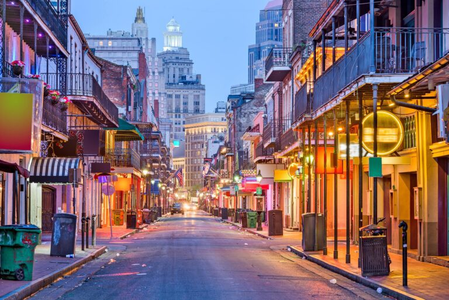
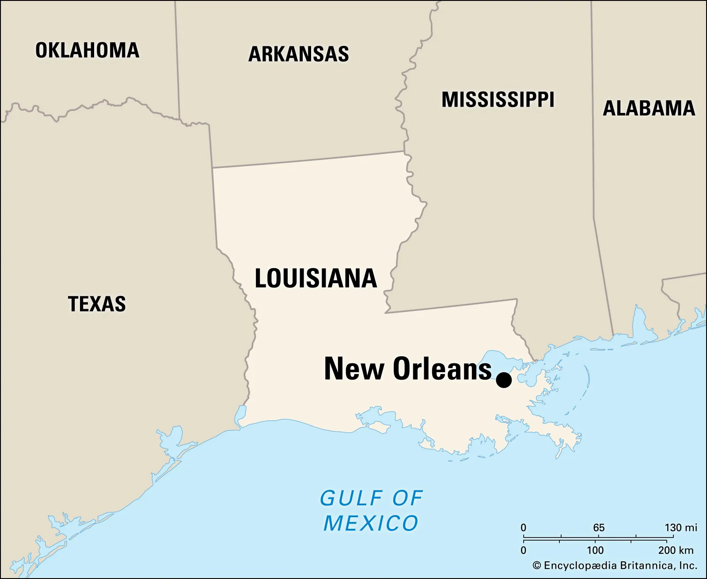

<!DOCTYPE html>
<html lang="en"></html>


<head>

<meta charset="UTF-8">

<title>My Favorite City</title>

</head>


<body>

<!--Your HTML tags will start here-->

 <h1>New Orleans, Louisiana, USA</h1>

 


 <h2>History</h2>
 <p>New Orleans, Louisiana history spans from its 1718 founding by the French (Jean-Baptiste Le Moyne), to it's periods of Spanish and French rule, and into its acquisition by the United States in the 1803 Louisiana Purchase.
    New Orleans is a uniquely vibrant American city renowned for its diverse culture, lively music scene, distinct cuisine, and distinctive architecture, all shaped by its French, Spanish, and African heritage.
    Located on the Mississippi River at the start of its delta, the city is celebrated for its annual Mardi Gras festival and its status as the birthplace of jazz. 
    Economically, it is a major port and a growing center for tourism and other industries.</p>


 <h2>Location</h2>
 


  <h3>Things to do in New Orleans</h3>

    <ol>
        <li>Visit the French Quarter, and vist many of the vintage New Orleans style shops, or head to Bourbon Street, for a variety of cultural events, bars & foods.</li>
        <li>Being the Birthplace of Jazz, visit the New Orleans Jazz Museum!</li>
        <li>Enjoy a breakfast or dinner cruise out on the Mississippi River, along with some sightseeing stops, with the Natchez Steamboat tour.</li>

    </ol>


    <a href="https://en.wikipedia.org/wiki/New_Orleans" target="_blank">Check out New Orleans</a>&nbsp;&nbsp;&nbsp;&nbsp;&nbsp;
    <a href="https://www.neworleans.com/things-to-do/" target="_blank">What New Orleans has to offer</a>


    <tfoot>
        <p style="text-align: center;"> Created by: Brandon Spencer</p>
    </tfoot>
<!--Your HTML tags will end here-->

</body>

</html>


